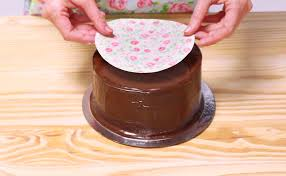
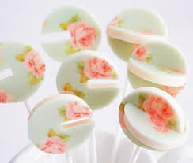

Se pegan con agua, pegamento comestible o gel en brillo. Pincelamos la superficie en donde vamos a colocarla, la cantidad debe ser poco lo ideal es que quede en un punto mordiente, es decir que este pegajosa. Es importante no excedernos sino la lamina se humedecera en exceso y se rompera.

Como uso el chocotransfer?
1. Cortar las imágenes y colocarlas en el molde, con la imagen hacia arriba, la que está impresa en espejo. Si no queda perfectamente colocada en el molde y vez que se mueve... pone apenas un poco de pegamento comestible en la base del molde para sujetar la imagen y que cuando tires el chocolate encima no se mueva.
2. Templar el CHOCOLATE BLANCO o calentarlo de a poco, para que no se queme.
El chocolate debe estar BIEN CALIENTE.
(depende la marca entre 30º y casi 40º, recomiendo probar con uno hasta conocer que temperatura les sirve)
Deberá quedar una mezcla homogénea y pareja para colocar en el molde.
Colocarlo en el molde a la misma temperatura, eso evitará que algunos se transfieran bien y otros no.
El papel se trabaja con calor sí o sí.
*Tip: Dejar reposar un momento el chocolate para que el aire salga, cuando suban las burbujas sacudir suavemente para que se vayan rompiendo, podes ayudarte con un palillo fino si alguna no sale. Luego de esto si meter en heladera hasta que este bien frío.
3. Meter en heladera. (no dejarlo mucho tiempo para que no traspire, 10 a 15 min es suficiente).
4. Desmoldar apenas sacamos de la heladera, quitar el papel blanco primero, y luego el acetato.
Es un plástico muy fino, en ocasiones es necesario ayudarse con un cuchillo o esteca para levantar el borde, y luego se despega sin problema. En el caso de que se despeguen los dos juntos, no te asustes, puede pasar, siempre controlar que hayan salido ambos papeles!
Y listo! esto puedes aplicarlo sobre cualquier superficie de chocolate plana, oreos bañadas, paletas, tortas piñata y más! En el caso de huevos de pascua, ver el video que tengo en Instagram para entender lo que NO debemos hacer y lo que SI.
*el color blanco no tiene tinta por ende esas zonas no hay color para transferir, por eso lo ideal es que se use chocolate blanco, así la imagen queda como debe.
El chocolate negro hará que el diseño no se vea, en estos casos podemos realizar una fina capa blanca sobre el chocotransfer, y luego si podemos agregar chocolate negro.

Gracias por tu compra, ahora a prestar atencion y a crear !!! 😊❤️